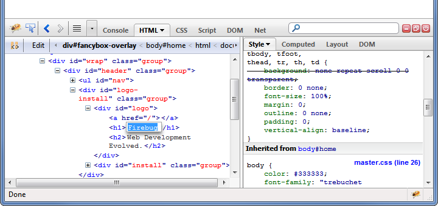
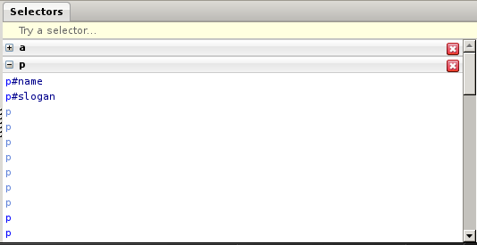
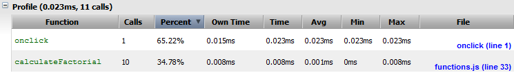
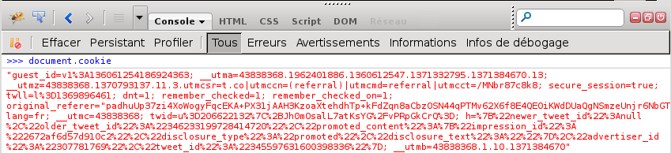

Firebug ? Kesako ?
- Un outil de développement web comprenant:
- Une console Javascript.
- Un visualiseur/modifieur de contenu HTML.
- Un visualiseur/modifieur de contenu CSS.
- Un débogueur JS.
- Un visualiseur de traffic réseau.
- Un visualiseur/modifieur de cookies.
- Firebug en anglais est l'insecte connu sous le nom de Gendarme
Qui développe Firebug ?
Auteur: Joe Hewitt
Développeurs actifs:
- Jan "Honza" Odvarko (Mozilla; République Tchèque)
- Sebastian Zartner (Allemagne)
- Simon Lindholm (Suède)
- Florent Fayolle (France)
- Farshid Beheshti (Iran)
- Steven Roussey (USA)
Autres contributeurs: code.google.com/p/fbug/people/list
Contenu de la présentation
Dernière chose avant de commencer...
... un sondage dans cette salle!
- Qui connaît Firebug ?
- Qui l'utilise comme outil de développement de prédilection ?
- Qui utilise l'onglet ...
- Console ?
- HTML ?
- CSS ?
- DOM ?
- Réseau ?
- Cookies ?
L'onglet HTML

L'onglet HTML
- Arborescence des éléments
- Inspecteur d'éléments HTML
- Manipulation du contenu
Ce texte va disparaître
Inspection et modification des styles CSS
- Aperçu des couleurs, des images, et des polices
- Manipulation des valeurs
Text
L'onglet CSS
- Voir l'ensemble des règles de votre page
- Modifier des règles à la volée
L'onglet CSS
Testeur de sélecteurs

L'onglet Réseau
- Analyse le temps de chargement des ressources
- Fournit diverses informations sur les requêtes réseaux
- Place des points d'arrêt
L'onglet Console
Le traçage des logs: l'API Console
- L'API Console: logguer des informations dans la Console Firebug
- Mise à disposition dans les scripts des pages Web
L'onglet Console
Evaluation d'expressions
- Evaluation d'expressions Javascript dans la Console Firebug
var myString = "Ma jolie chaîne de charactère";
console.info(myString);
function sayHello(name)
{
alert("Hello " + name + "!");
}
var regExp = /bla/;
L'onglet Console
Profilage
- Mesure l'exécution de vos fonctions

L'onglet Console
Les API de la ligne de commande
- $("<sélecteur>"): Retourne le premier élément correspondant au sélecteur CSS
- $$("<sélecteur>"): Retourne tous les éléments correspondant au sélecteur (objet Array)
- $0, $1: Référence vers le dernier / avant-dernier élément sélectionné dans le panneau HTML
- include("<url>"): Télécharge et exécute un script distant
- ...
- help: Liste toutes les commandes avec les liens vers la doc!
L'onglet Cookies
document.cookie ?... ;(

Les nouveautés
de la version 1.11
- performance.timing dans la console et dans l'onglet Réseau
- Testeur de sélecteur CSS
- Commande include()
- Closure Inspector
- Surveillance de l'utilisation de window.postMessage()
- Collage de code HTML
- Amélioration des commandes $(), $$() et $x()
Les nouveautés
À venir
- Nouvelle API de déboguage (JSD2)
- Intégration de CodeMirror (à la place d'Orion)
- Plus de colorations syntaxiques (onglet Script; édition CSS, HTML...)
- Groupement des traces de la console
- Filtres multiples
- Visualisation et gestion des évènements
Comment contribuer ?
En un mot ? Faites !
- Proposez / Reportez
- Codez
- Participez aux tests des versions alpha / beta
- Rédigez des articles
- Documentez
Comment contribuer ?
Pré-requis
- Maîtrise du JS (pour le code)
- Bonne expérience en HTML et CSS
- Bon anglais écrit et oral
Merci de votre attention!
Des questions ? Des remarques ?
Des trolls ?